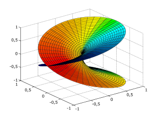
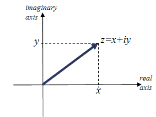
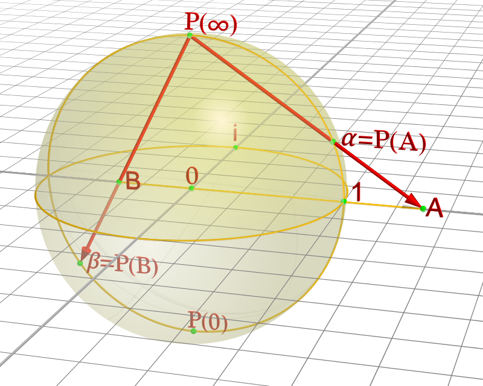
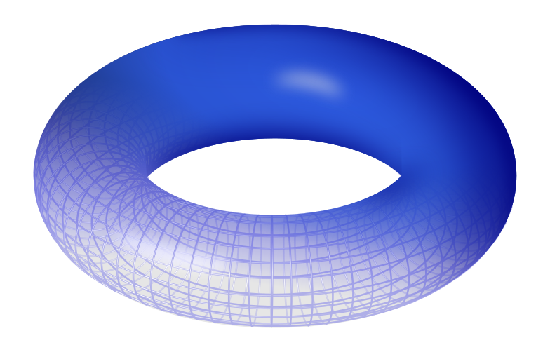

Riemann developed a new way of looking at polynomial equations using complex variables. Rather than use the real case to define the curve of a plane, Riemann uses complex variables to define a real surface, the Riemann surface, spread out over the plane. Riemann later demonstrated how surfaces like these can be classified by their genus and drawn in "sheets" onto a surface, also known as topology.

Complex Plane: The most basic Riemann surface. The complex plane consists of real numbers on the x-axis and complex numbers on the y-axis.

Riemann Sphere: Another common Riemann Surface.

Torus: a surface of revolution generated by revolving a circle in three-dimensional space about an axis coplanar with the circle.
